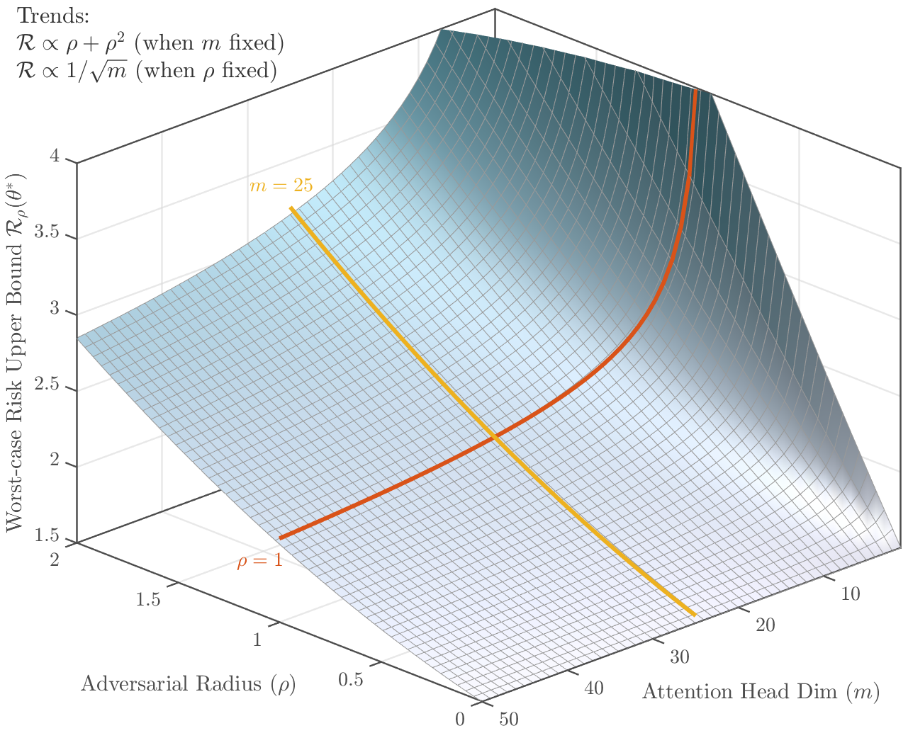
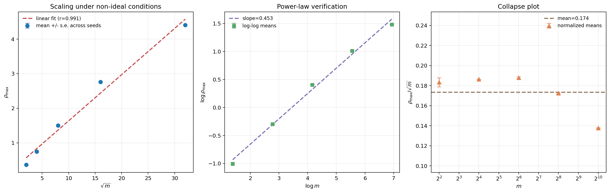
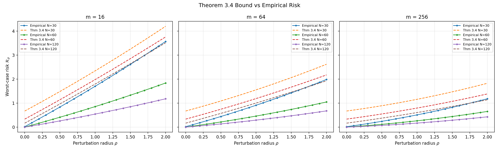

Key derivations of the robustness bounds and scaling laws are machine-checked in Lean 4, with modules mapped to paper theorems in an appendix.
Abstract
In-context learning (ICL) allows large language models to adapt to new tasks from a few examples without updating their parameters. Existing theories explain ICL by assuming the test task distribution matches pretraining – an assumption that breaks down under adversarial distribution shifts. We introduce a distributionally robust meta-learning framework that provides worst-case guarantees for ICL under Wasserstein-based distribution shifts. Focusing on linear self-attention Transformers, we derive a non-asymptotic bound connecting adversarial perturbation strength ($ρ$), model capacity ($m$), and the number of in-context examples ($N$). The analysis reveals that the maximum safe perturbation radius scales as $ρ_{\max} \propto \sqrt{m}$, while maintaining performance under adversarial shift requires additional in-context examples with $N_ρ- N_0 \propto ρ^2$. Experiments on synthetic tasks confirm these scaling laws, and experiments on 21 real pretrained models (0.1B–7B parameters, 5 families) provide qualitative evidence consistent with the theory's predictions, while revealing that ICL capability is a prerequisite for robustness. These findings advance the theoretical understanding of ICL under adversarial conditions and formalize the sense in which larger models are safer under distributional shift.
Problem
Existing theories of in-context learning (ICL) assume test tasks match the pretraining distribution, which fails under adversarial distribution shift. Worst-case guarantees for ICL under Wasserstein-ball shifts were missing.
Approach
ICL is cast as distributionally robust meta-learning over a Wasserstein ball around the true task distribution. For linear self-attention Transformers, a ridge-regression equivalence and a Lipschitz bound on the predictor are used to derive a non-asymptotic worst-case meta-risk bound in terms of perturbation strength, head dimension and context size. The key algebraic derivations are machine-checked in Lean 4 (Appendix C). The predictions are tested on synthetic regression tasks and 21 pretrained LLMs.

Figure 2: Schematic visualization of the worst-case meta-risk upper bound as a function of adversarial radius \rho and model capacity m . The surface illustrates how risk increases quadratically with \rho but becomes progressively flatter as m increases, demonstrating the mitigating effect of model capacity on adversarial vulnerability.
Results
The maximum safe perturbation radius scales as sqrt(m), and the extra in-context examples needed grow as rho^2. Synthetic experiments give a log-log slope of 0.453 (correlation 0.991), and real LLMs show qualitatively consistent trends, with ICL capability acting as a prerequisite for robustness.

Figure 3: Experiment 1: robustness-capacity scaling under non-ideal conditions. Left: mean \rho_{\max} with standard-error bars versus \sqrt{m} . Middle: log-log plot showing an approximately linear power-law relationship. Right: collapse plot of \rho_{\max}/\sqrt{m} versus m , which remains approximately flat across capacities. Despite anisotropy, heavy-tailed noise, and finite-sample effects, th

Figure 12: Direct verification of Theorem 3.4 . Empirical worst-case risk (circles) versus the theoretical upper bound (dashed) for three capacities. The bound holds for all 189 test points (100% validity) with a mean relative gap of 36–74%, confirming that the bound is valid and reasonably tight for moderate \rho .